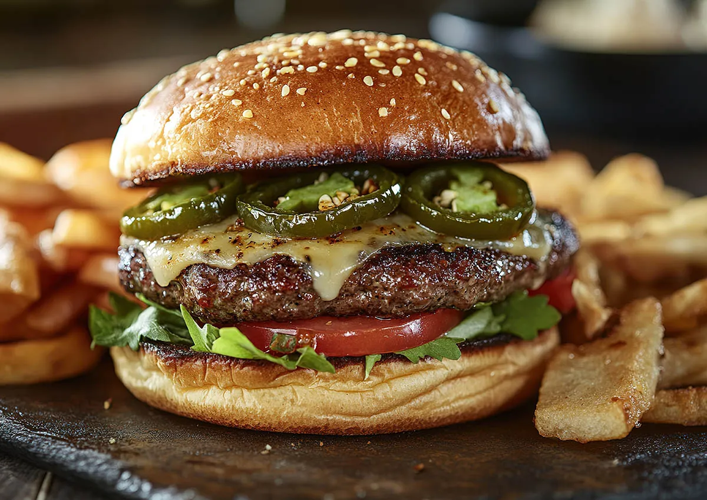

Hamburguesa Picante
Mexicana

"Una explosión de sabor para
los valientes."
Ingredientes
- 1 pan rústico o de maíz
- 150 g de carne molida con especias (comino, paprika, ajo en polvo)
- 1 cucharada de guacamole casero
- 3–4 rodajas de jalapeños (frescos o en conserva)
- 1 puñado de nachos triturados
- 1 rebanada de queso pepper jack
- 1 cucharada de salsa chipotle
- Cilantro fresco (opcional)
- Sal y pimienta al gusto
Preparación
- Mezcla la carne con las especias y forma la hamburguesa.
- Cocina hasta dorar bien y agrega el queso para derretirlo.
- Unta guacamole en el pan inferior, coloca la carne, nachos, jalapeños y salsa chipotle.
- Agrega cilantro picado si deseas un extra de frescura.
- Cubre con el pan superior.
Mr.BurgerTips
Si te gusta el picante extremo, añade unas gotas de salsa habanero.